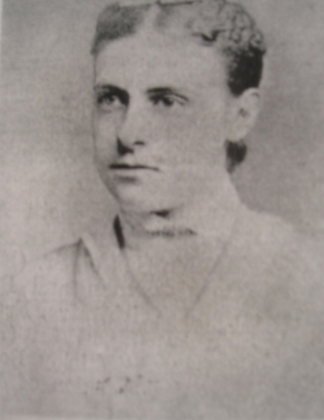

Hilma af Klint
Pamela Buscema & Laiba Sarwar

Anna Cassel
The Five
- af Klint partnered with Anna Cassel (whom she met at the Academy of Fine Arts), Cornelia Cederberg, Sigrid Hedman and Mathilda Nissan.
- Formed “The Five” because of shared ideas such as spiritualism and Theosophical but also because of their involvement in the Edelweiss Society.
- In each meeting, they would start with a prayer, then a meditation, a Christian sermon and then a analysis of the New Testament.
- They would end the meeting with a seance (attempt to contact the dead with a medium).